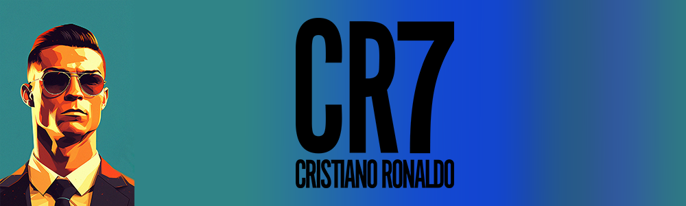

El Barça y la Juve lo pretendían, aunque finalmente fue el Machester quien lo fichó en el verano de 2003 tras pagar 17,5 millones de euros de traspaso. Cristiano permaneció en el club durante 6 temporadas donde obtuvo 3 Premier Leagues, 1 Copa de Europa y 1 Mundial de Clubes.
Reconocimientos
Considerado uno de los mejores futbolistas del mundo y uno de los deportistas más mediáticos. Ronaldo fue distinguido con el premio al Mejor jugador de la Premier League en 2007 y 2008, así como Deportista portugués del Año. En la temporada 2007-08 se hizo acreedor de la Bota de Oro, el Balón de Oro, y el FIFA World Player en 2008.
El 11 de junio de 2009 el Manchester United aceptó la oferta de 93,9 millones de euros del Real Madrid C.F. El traspaso de Cristiano Ronaldo se confirma el 26 de junio y se convirtió en el traspaso más caro de la historia del fútbol. El 6 de julio fue presentado en el Estadio Santiago Bernabéu ante 80.000 personas. Debutó en el campo el 21 de julio con una victoria por 1-0 sobre el Shamrock Rovers.
Su primer gol llegó una semana después de penalti en la victoria del Madrid por 4-2 sobre el LDU Quito. El 29 de agosto, se estrenó en la Liga con un gol contra el Deportivo La Coruña al que ganaron 3-2; el 15 de septiembre, anotó dos tiros libres en la victoria por 5-2 frente al Zürich, sus primeros goles en la Champions League para el Real. Tras anotar otro gol en un partido de Liga ante el Villarreal, se convirtió en el primer jugador del club en anotar en sus primeras cuatro apariciones.
Con el Real Madrid consiguió una Copa del Rey en 2011, la Liga 2011-12 y la Supercopa de España 2012. Con la Selección de fútbol de Portugal logró el subcampeonato en la Eurocopa 2004 de Portugal, y un cuarto lugar en la Copa Mundial de 2006 en Alemania.
En su cuarta temporada consecutiva con el Real Madrid logró la Copa de Su Majestad el Rey; la Champions League; una Super Cup y la FIFA Club World Cup. En la final de la Champions League ante el Atlético de Madrid, se convirtió en el primer jugador en la historia en anotar en dos finales de la Copa de Europa para dos equipos ganadores diferentes. El Real ganó su décima Copa de Europa.
El 20 de abril de 2019, La Juventus de Turín gano 2-1 ante la Fiorentina conquistando matemáticamente su 35 título de campeón de Italia, el octavo consecutivo y el primero de la ‘era’ del portugués Cristiano Ronaldo.
En sus tres temporadas en la Juve, Cristiano ganó dos ligas, una Copa y una Supercopa italianas, y marcó 101 goles en 134 encuentros.
La rivalidad Cristiano Ronaldo–Lionel Messi es una rivalidad deportiva alentada por los medios de comunicación y aficionados, que involucró a ambos futbolistas principalmente por ser coetáneos, por sus similares registros, éxitos deportivos, por ser capitanes y rivales en los partidos de El Clásico.
Juntos han logrado diversos hitos históricos en el deporte, llegando a ser considerados como dos de los mejores futbolistas de todos los tiempos. Si bien, han sido acreedores de diversos premios individuales importantes a lo largo de sus carreras,n los críticos de fútbol generalmente están de acuerdo en que ambos son los mejores jugadores de su generación, superando a sus compañeros numéricamente por un margen significativo. Prueba de ello, han logrado numerosas hazañas y han conseguido reconocimientos únicos para un futbolista, como el premio al Jugador del Siglo xxi en el caso del luso o el Premio Laureus en el caso del argentino.
Futbolista
Futbolista
El club Al Nassr de Arabia Saudí anunció oficialmente el viernes 30 de diciembre de 2022 el fichaje de Cristiano para las dos próximas temporadas, después de que el portugués rompiera su relación con el Manchester United durante el Mundial de Qatar. El Al Nassr, uno de los mejores equipos de Arabia Saudí, logró ser campeón de la liga nacional en varias ocasiones.
En agosto de 2023, logró su primer título con el equipo árabe al ganar la Copa de Campeones Árabe 2023, donde anotó un doblete en la final contra el Al-Hilal Saudi Football Club. Además, se hizo merecedor del premio Bota de Oro en ese torneo.
Máximo Goleador Mundial del 2023 al registrar 54 goles en el transcurso del año.